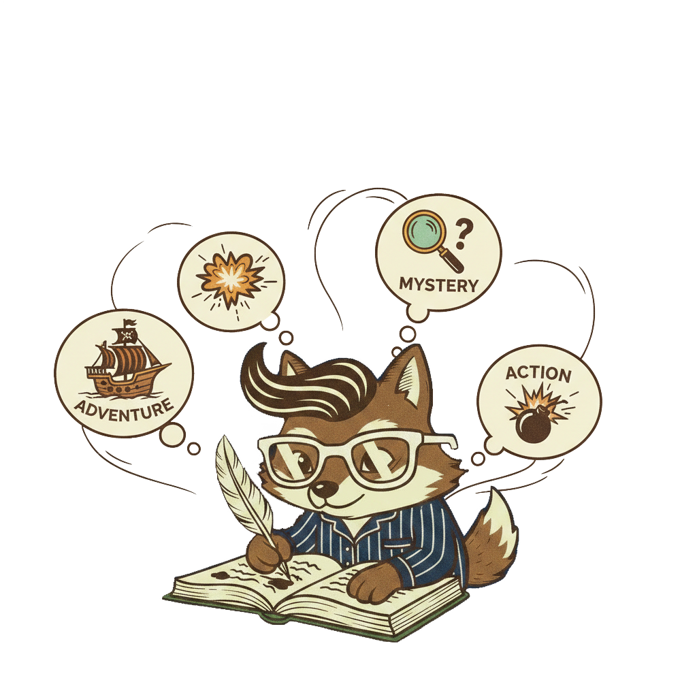

Prólogo
La premisa
Antes de que empiece el cuento, déjame prometerte algo: esta vez la historia no hablará de cualquiera, sino de ti.
Senior Lobo está preparando relatos únicos gracias a los últimos avances en el campo de la IA, abriendo las puertas para generar historias 100% personalizadas.
Ya no hará falta que te pongas en «la piel de personaje» porque el protagonista, serás tú.
Capítulo I
¿Qué es Senior Lobo?


Es una herramienta digital de creación literaria que se encarga de escribir un cuento hecho a la medida de los más pequeños de casa.
Gracias a la ayuda de la IA y a un narrador nato que lleva siglos contando historias queremos ser precursores de una misión importante: componer un relato único e irrepetible. Creemos fielmente en la necesidad de contar historias que entretengan, eduquen e incluso reduzcan sus miedos gracias a una lectura de historias espejo.
Queremos que tus hijos sean el centro real de la historia, el núcleo desde dónde todo gire. A través de un sencillo formulario los usuarios podrán personalizarlo todo: su nombre, sus gustos, seleccionar géneros, trama y añadir todas las personas que forman parte de su entorno. Una forma nueva que cambia totalmente el juego de leer las aventuras de otro a tener una historia hecha para ellos.
Capítulo II